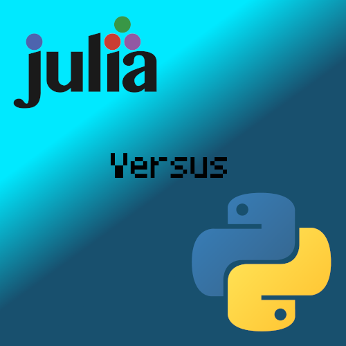

Python and Julia are programming languages that fill a very similar niche. They're both dynamic scripting languages popular in the scientific computing space. Why is Julia languishing, while Python is flourishing?

Julia has been relatively successful at attracting users. A lot of CS students learn Julia in college. But very few have been convinced to become contributors. I was curious, so I looked at the recent PRs. I was looking for a PR from someone not in the Julia programming language organization. I found one. It was the 63rd PR I looked at. A prolific contributor who wasn't technically in the organization, but had contributed all over the Julia package ecosystem. I scrolled through a couple more pages, but couldn't find a name that I didn't recognize. The Julia community is very tight-knit and insular.
I did the same for Python. The fourth PR from the top was submitted by a first time contributor. The Julia organization on Github has 187 members. Python has by far more users, but only 129 members. Anyway, this is circumstantial evidence that doesn't prove anything. But something is going on here.
No language is "better" than another. Usually these comparisons are an excercise in tribalism. But bear with me here. Let's look at just the technology. In a vaccum, Julia seems "better" than Python.
It's faster. It automatically deduces types, then uses them to jit compile using LLVM ORC. You can compile a function and read the assembly. It has perhaps (tied with ipython) the best REPL in the world, built into the base language. It solves the expression problem, which python cannot. It has a more principled package manager. You can run Julia code on the GPU. The compiler is extensible. Very fancy. It's a complex and incredible marvel of engineering. It has everything going for it, from a technical perspective, minus the maintainability issues.here's the problem.
Why, then, does Julia not attract contributors? Surely all of that should make people want to work on it, right?
Yeah, no. None of that matters. You can have the fanciest compiler in the world. Nobody cares.
Fundamentally, what contributors want is to solve their own problems and optimize their own experience. They are selfish. They think about how to use the project to accomplish their own goals. They don't care about the maintainer's problems as much as the maintainer may hope. Especially if they cannot at a glance understand those problems.
Potential contributors may support your mission, but they won't sacrifice anything for it. Julia is too complicated to contribute to without sacrifice. I know because I have sacrificed. This is Julia's biggest problem.
Contributors want to contribute so that they can avoid pain, not take on more pain. They also have a very short attention span. If they can't immediately solve their problem, they will leave. They'll find a workaround without upstreaming a fix, or they will just find some other project. The only way to get someone to sacrifice for your cause is to pay them, or offer some other incentive. Nobody wants to clean up your mess for you. Open sourcing your code is not going to change that. Nobody is going to materialize next to you with a solution.
I've had multiple conversations with maintainers to the effect of "We have a long list of good first issues, why is nobody picking them up? We have like three hundred of them! Fix our type inference bugs! Debug our segfaults! Why are there no new contributors? They should be cleaning up after us!"
They forget that people have their own problems to deal with.
For an open source contributor, the decision to contribute or not is a simple risk vs reward. The risk is wasted time. The reward is getting features and fixes merged.
To maximize external contributions, maintainers need to drastically lower the barrier to entry while making the project as useful as possible. That way people are drawn to the project, and useful contributions to your project will not require much sacrifice. It changes the risk/reward calculation. The hope is that maybe some of those short term contributors will keep using your project and turn into long term contributors and maintainers. People that you can design new features with, who can review your code and point out conceptual issues.
In addition to lowering the barrier to entry, You need to make sure that people know it's low. Otherwise they will make a subconcious error in their risk/reward analysis. Frequent communication is key for this. If they see people on discord asking how a feature works, they know that if they write a PR, if they encounter issues they can ask questions as well. Then they will go do that. But if you need to find someone willing to review your PR and you haven't already befriended a maintainer, and you're not sure that the code will be readable in the first place, then maybe not. Your time is probably better spent elsewhere.
"Low attention span" describes most first time contributors, but there do exist other kinds. The other kind is a contributor with a difficult problem and some determination. They want to use your project to do something, something it may not even be designed for. And they need your help. These people are great. Empower them as much as you can.
This is all well and good. But it's not actionable advice. Here is some actionable advice.
Automated testing is a must. Write good, exhaustive tests so that contributors can be confident that their features and fixes won't cause regressions elsewhere. Equally important, write up a guide on how run tests and add tests, and place this guide somewhere prominent. Both should be as frictionless as possible.
Document anything that would not be immediately understandable by a layperson. As a Julia example, nobody without a degree in compiler engineering is going to understand what a phi node or a dominance frontier is. It's core knowledge for understanding how Julia works, but that doesn't matter. If you want contributors, then this is unacceptable. It needs to be documented and made simple. At very least, point to resources that can be consumed in < 15 minutes. If it doesn't exist, then write it yourself. No single problem is so complicated that it should take more than 15 minutes to explain. If it does, the explanation can probably be broken up.
APIs should be self documenting, but you should document them anyway. Exhaustively. You can do this with LLMs, they're very good at it. If it's python, add type annotations. Not as a tool for communicating with a type checker, but as a rule for communicating with humans. It makes the code more readable. I find myself spending a long time figuring out all the different places a function could be called from so that I can figure out types. The better solution is to just put them there yourself.
Set up a Discord server. Most people don't have Slack, and people usually don't want to sign up for your Discourse. But I understand that those do work for some projects. Github discussions are a suitable alternative, but work best for single repo projects. Whatever you choose, be active there answering questions. Think of this time investment as an investment. More people will arrive later with the same question, and other people will know the answer. Maybe you'll even get your own ptrblk. Distributing the knowledge is very important.
Acknowledge and appreciate contributions. Doesn't matter how large or small. You want contributing to your project to feel good. Make sure they feel proud of their work. This too is an investment. The goal is to turn short term contributors into long term contributors.
Create tutorials. If your project has a feature, then it needs a tutorial. These tutorials can also serve as marketing material.
Office hours are incredibly useful.